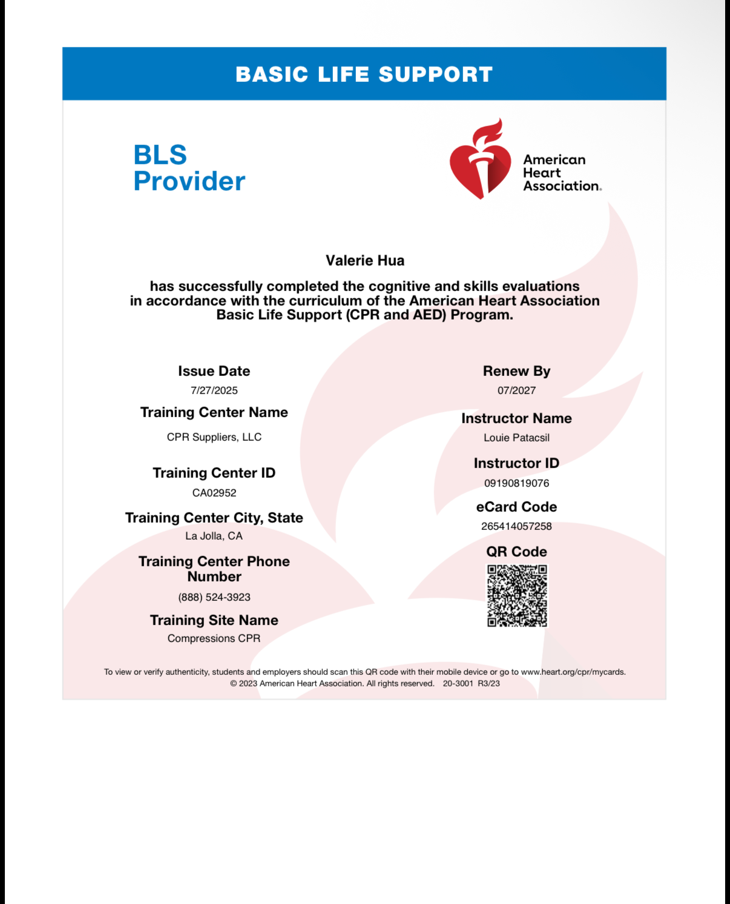
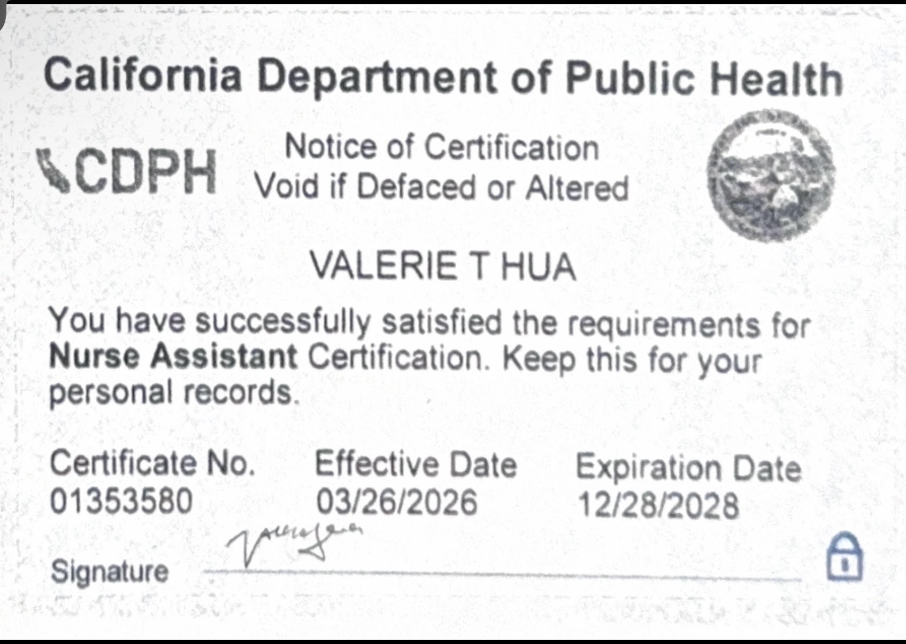
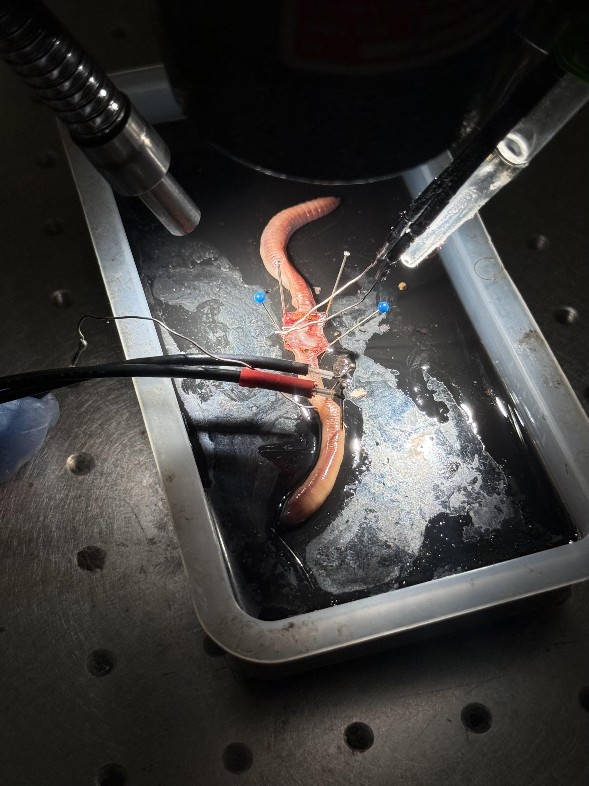
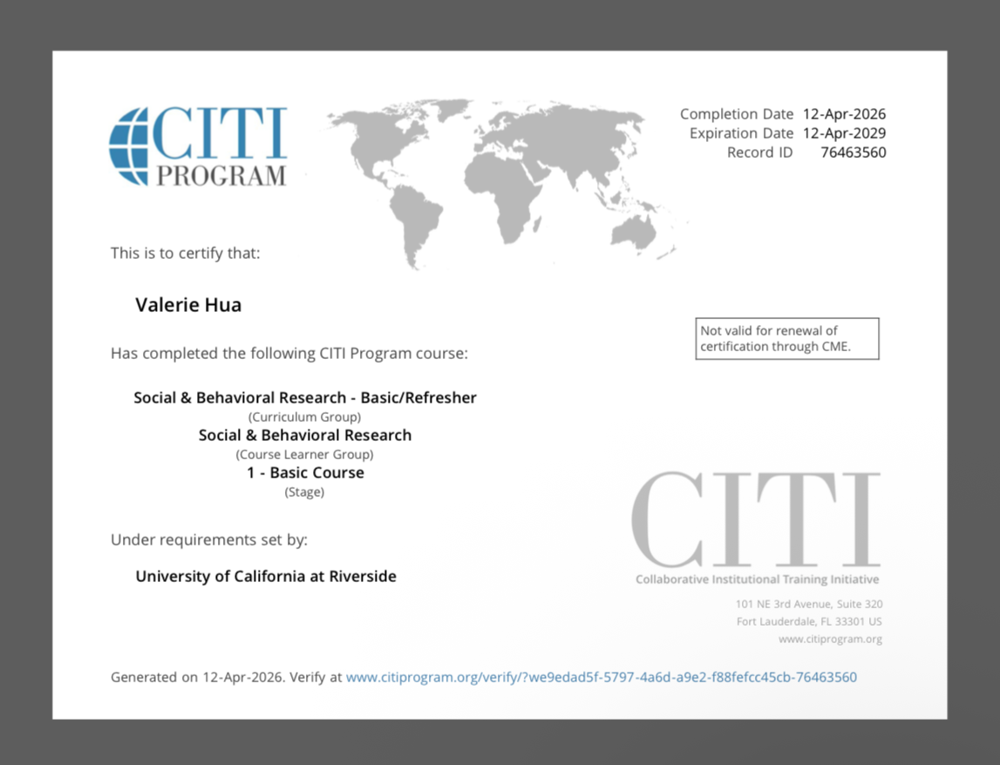
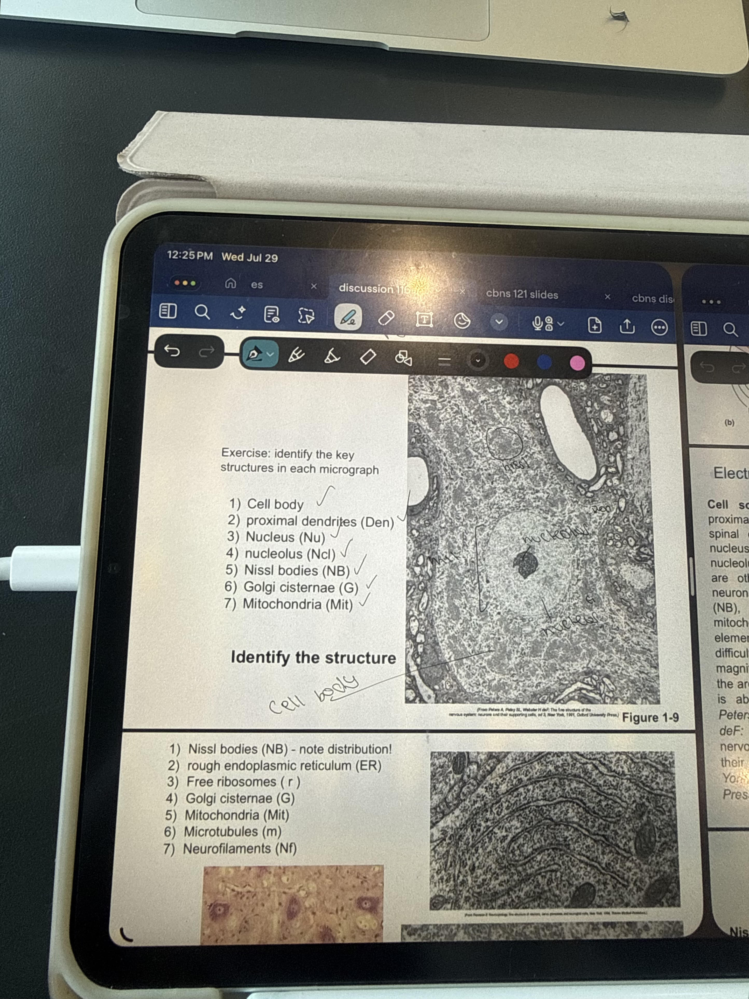

Valerie Hua
Hi, I'm Valerie Hua, a fourth-year neuroscience major at the University of California, Riverside, with a passion for understanding how the brain shapes the way we think, feel, and behave. I've always been curious about the connection between biology and human experience, and studying neuroscience at UCR has given me a strong foundation to explore that question. My coursework has covered cellular and molecular neuroscience, cognitive neuroscience, neuroanatomy, psychology, and statistics. What draws me to the field is how it brings together biology, chemistry, psychology, and medicine to explain something as complex as the human mind, and how that knowledge can improve people's lives.
Alongside my studies, I currently work as a Certified Nursing Assistant (CNA), where I provide direct, hands-on care to patients every day. My responsibilities include assisting with daily living activities, taking and recording vital signs, monitoring changes in patients' conditions, supporting mobility and safety, and communicating closely with nurses and the broader care team. Working as a CNA has taught me that quality healthcare depends on attentiveness, compassion, and teamwork. Many of the patients I care for live with conditions that affect the brain and nervous system, such as dementia, stroke, and Parkinson's disease, and seeing their challenges firsthand has given my neuroscience education a deeply personal meaning.
Balancing a demanding major with clinical work has strengthened my time management, adaptability, and ability to stay calm under pressure. In the classroom, I learn the science behind how neurons communicate and how disease disrupts those processes. At work, I see how those same processes affect real people and their families. Moving between these two worlds has shaped my perspective and reinforced my belief that the best care combines scientific understanding with genuine empathy. It has also sharpened my communication skills, since I regularly explain care routines to patients and families and collaborate with healthcare professionals in a fast-paced environment.
As I approach graduation, I plan to pursue medical school. I'm especially interested in neurology and patient care for people with neurological and neurodegenerative conditions, and I hope to build a career where I can apply both my scientific training and my clinical experience to make a meaningful difference. When I'm not studying or working, you can find me [hobbies, e.g., hiking, reading, spending time with family, or exploring new places to eat. I believe staying curious and balanced makes me a better
Experience
ER Volunteer
• Assist emergency department staff to maintain workflow and efficiency of patient care
• Restock and organize medical supplies and equipment during fast-paced operations
• Maintain cleanliness and sanitation of patient care and staff areas
Undergraduate Research Assistant
• Administer psychological experiments with human participants using MATLAB
• Analyze data with statistical models to study preview effects and real-time decision-making
• Collaborate with the research team and present results at quarterly meetings
Student Intern
• Provided direct support and supervision to psychiatric patients
• Supported CNAs with patient ADLs, including hygiene, feeding, transport, and repositioning
• Monitored changes in patient behavior, mobility, and condition and reported to nursing staff
Pharmaceutical Sciences Intern
• Assisted pharmacists in preparing medication deliveries
• Transcribed and organized patient information, including allergies and medication instructions
• Shadowed pharmacists during phone consultations with patients and doctors
Student Intern
• Collected and recorded patient vitals and organized patient data
• Assisted nursing staff across pre-operative, post-operative, and emergency units
• Answered call lights, transported discharged patients, and maintained unit spaces
Medical Intern
• Facilitated free medical clinics in low-income areas of Cusco, Peru
• Distributed medication, took vital signs, and performed basic assessments
• Collaborated with local doctors and pharmacists to provide patient care
Barista
• Prepared beverages and food efficiently during high-volume operations
• Provided personalized recommendations to ensure high customer satisfaction
• Maintained cleanliness, organization, and food-service standards
Education
University of California, Riverside
GPA: 3.76
Portfolio




